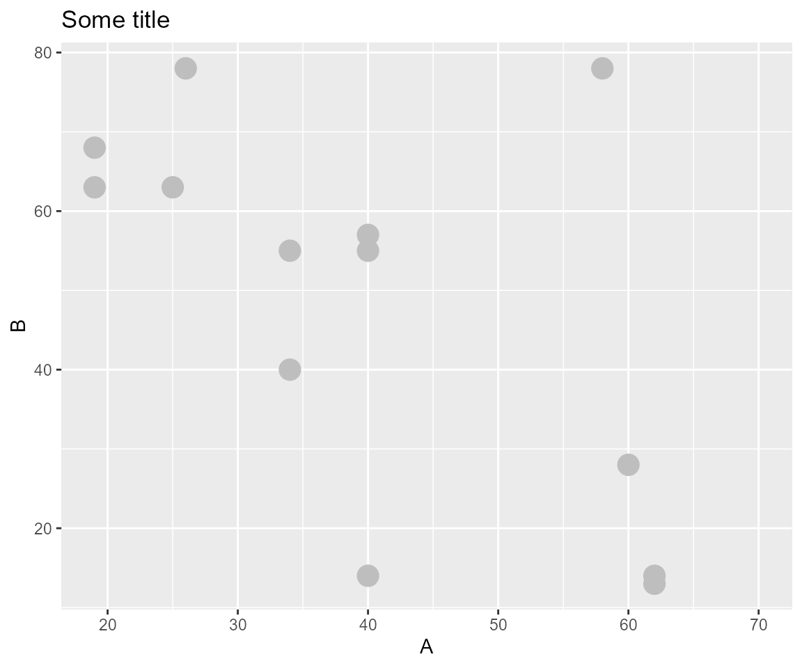
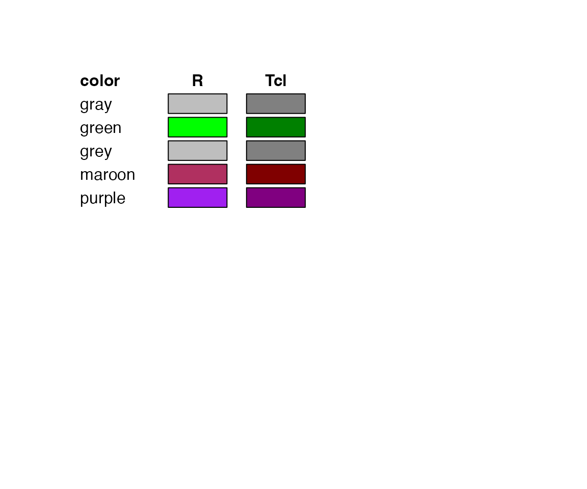

There And Back Again
Differences When Transforming
R.W. Oldford and Zehao Xu
2021-09-17
Source:vignettes/thereAndBackAgain.Rmd
thereAndBackAgain.RmdSome data
Consider the following artificially generated dataset:
data <- data.frame(A = c(19, 19, 25, 62, 34,
58, 62, 40, 24, 60,
70, 40, 40, 34, 26),
B = c(68, 63, 63, 13, 55,
78, 14, 14, NA, 28,
NA, 55, 57, 40, 78) )There are 15 observations in the dataset; variable A is complete (has no missing values), whereas variables B and C are missing 2 and 0 observations, respectively.
ggplot to loon transformation
the ggplot and its states
Begin with a ggplot defined using the interactive grammar extension:
ggp <- ggplot(data,
mapping = aes(x = A, y = B)) +
ggtitle("Some title") +
geom_point(color = "grey", size = 5) +
linking(linkingGroup = "my plots")
plot(ggp)
Information on the ggplot corresponding to loon states is had using ggplot_build()
# get the ggplot data corresponding to loon "states"
ggp_states <- ggplot_build(ggp)$data[[1]]
ggp_states
#> x y PANEL group shape colour size fill alpha stroke
#> 1 19 68 1 -1 19 grey 5 NA NA 0.5
#> 2 19 63 1 -1 19 grey 5 NA NA 0.5
#> 3 25 63 1 -1 19 grey 5 NA NA 0.5
#> 4 62 13 1 -1 19 grey 5 NA NA 0.5
#> 5 34 55 1 -1 19 grey 5 NA NA 0.5
#> 6 58 78 1 -1 19 grey 5 NA NA 0.5
#> 7 62 14 1 -1 19 grey 5 NA NA 0.5
#> 8 40 14 1 -1 19 grey 5 NA NA 0.5
#> 9 24 NA 1 -1 19 grey 5 NA NA 0.5
#> 10 60 28 1 -1 19 grey 5 NA NA 0.5
#> 11 70 NA 1 -1 19 grey 5 NA NA 0.5
#> 12 40 55 1 -1 19 grey 5 NA NA 0.5
#> 13 40 57 1 -1 19 grey 5 NA NA 0.5
#> 14 34 40 1 -1 19 grey 5 NA NA 0.5
#> 15 26 78 1 -1 19 grey 5 NA NA 0.5Note that some of the x and y values are NA, representing missing values.
the loon plot and its states
Now construct the loon plot from this ggplot:
lp <- loon.ggplot(ggp)
plot(lp)
The loon plot looks slightly different:
- title in a different position,
- the relative sizes of the margins and drawing areas,
- axis tic marks and labels,
- font sizes and styles, and
- points are a slightly darker grey in the
loonplot.
Plots in loon have more constrained layouts than those in ggplot2, since focus is primarily on interactive as opposed to publication quality graphics.
Some differences (e.g., colour) are also because loon is based on Tcl for drawing primitives.
Plot states in loon are accessible using [] and the name of the state. Values are assigned in the same way. Names of interactively changeable states in loon are
names(lp)
#> [1] "glyph" "itemLabel" "showItemLabels" "linkingGroup"
#> [5] "linkingKey" "zoomX" "zoomY" "panX"
#> [9] "panY" "deltaX" "deltaY" "xlabel"
#> [13] "ylabel" "title" "showLabels" "showScales"
#> [17] "swapAxes" "showGuides" "background" "foreground"
#> [21] "guidesBackground" "guidelines" "minimumMargins" "labelMargins"
#> [25] "scalesMargins" "x" "y" "xTemp"
#> [29] "yTemp" "color" "selected" "active"
#> [33] "size" "tag" "useLoonInspector" "selectBy"
#> [37] "selectionLogic"
# and accessed with [] as in
lp["title"]
#> [1] "Some title"(See also ?l_info_states.)
Some, like x, y, and color, are n-dimensional states whose values correspond to those on individual observations. These may be changed using the [] <- notation as well.
Because loon plots exclude observations missing values in any its n-dimensional states, the loon plot will have fewer observations than the corresponding ggplot, even though the same number of points may be plotted. The actual number of observations in the loon plot is
lp["n"]
#> [1] 13which is less than the number of observations recorded in the ggplot structure (namely nrow(ggp_states) = 15).
changing from ggplot to loon
Differences between ggplot structure and loon plot structure (and how these affect the visualizations) is worth exploring in a little more detail. A better understanding will be helpful when transforming back and forth between the two.
shape to glyph
In R the point symbol plotted is associated with a numerical code pch. In loon the point symbol is a glyph, identified by a string.
ggp_states$shape
#> [1] 19 19 19 19 19 19 19 19 19 19 19 19 19 19 19
lp["glyph"]
#> [1] "circle" "circle" "circle" "circle" "circle" "circle" "circle" "circle"
#> [9] "circle" "circle" "circle" "circle" "circle"As with other plot “states”, there is not always a glyph in loon that matches a pch in R. Values of pch with no counterpart in loon will map to the default glyph in loon.
point size
Size is another plot state that differs between ggplot and loon.
ggp_states$size
#> [1] 5 5 5 5 5 5 5 5 5 5 5 5 5 5 5
lp["size"]
#> [1] 26.78116 26.78116 26.78116 26.78116 26.78116 26.78116 26.78116 26.78116
#> [9] 26.78116 26.78116 26.78116 26.78116 26.78116The point size in loon identifies the approximate area of the point symbol, so when transforming from ggplot to loon, the size parameter of the ggplot is transformed to an integer value in loon that tries to match the area of the point in ggplot.
colours
Comparing the plots, the points are slightly different "grey" in one plot than in the other.
This is because the two plots have different values stored as their colour state:
ggp_states$colour
#> [1] "grey" "grey" "grey" "grey" "grey" "grey" "grey" "grey" "grey" "grey"
#> [11] "grey" "grey" "grey" "grey" "grey"
lp["color"]
#> [1] "#808080808080" "#808080808080" "#808080808080" "#808080808080"
#> [5] "#808080808080" "#808080808080" "#808080808080" "#808080808080"
#> [9] "#808080808080" "#808080808080" "#808080808080" "#808080808080"
#> [13] "#808080808080"First, there is a slight difference between what R regards as "grey" and what Tcl (used by loon) regards as "grey". Several other named colours in R also differ slightly from those in Tcl and hence in loon. R colours whose name is the same as that in Tcl but whose colour is different are only the following:  (See ?tkcolors in loon for more information.)
Second, loon plot colour values are strings of twelve hexadecimal digits, as in tk (e.g., see ?tkcolors); in contrast, the ggplot are either strings corresponding to the named R colours (see ?grDevices::colors in R) or to six hexadecimal digits (two for each of the red, green, and blue components).
Twelve hex digit colours are turned into six hex digits using the loon function hex12to6(). To convert the R named colours to six hex digits, the following function can be used.
tohex <- function(x) {
sapply(x, function(xi) {
crgb <- as.vector(col2rgb(xi))
rgb(crgb[1], crgb[2], crgb[3], maxColorValue = 255)
})}So, comparing the two "grey" colours, the ggplot has the R hex colour tohex("grey") = #BEBEBE and the loon plot has Tcl hex colour (converted to hex 6) hex12tohex6(lp["color"][1]) = #808080, which are clearly different RGB values.
effect of missing data
The loon plot does not include the missing data
nrow(ggp_states) == lp["n"]
#> [1] FALSE
# Compare
ggp_states$y
#> [1] 68 63 63 13 55 78 14 14 NA 28 NA 55 57 40 78
lp["y"]
#> [1] 68 63 63 13 55 78 14 14 28 55 57 40 78Note that, absent the missing NAs, the order of the points is identical.
on linking keys
Default linking keys in loon are from "0" to "n-1" where "n" is the number of rows in the original data set.
Here nrow(data) = 15. Note that this "n" is not the number of points actually plotted because loon drops the missing data, unlike ggplot.
The linking keys reflect this missingness:
lp["linkingKey"]
#> [1] "0" "1" "2" "3" "4" "5" "6" "7" "9" "11" "12" "13" "14"which is missing "8" and "10". Note also that lp["n"] = 13 is the number of points plotted in the loon plot.
Some care needs to be taken when dealing with linking, especially when there is missing data.
loon to ggplot transformation
A ggplot from the loon plot will not have access to the original information.
ggp_lp_1 <- loon.ggplot(lp)
ggp_lp_1
Note that, though a ggplot, the position of the title is now centred. This is because the objective of the transformation is to create a ggplot that looks as much like the original loon plot as possible.
the ggplot states
To try to reflect the look of the loon plot, the states of the ggplot are different from those of the original ggplot ggp.
ggp_lp_1_states <- ggplot_build(ggp_lp_1)$data[[1]]
ggp_lp_1_states
#> colour size x y PANEL group shape fill alpha stroke
#> 1 #808080 5 19 68 1 1 19 NA NA 0.5
#> 2 #808080 5 19 63 1 1 19 NA NA 0.5
#> 3 #808080 5 25 63 1 1 19 NA NA 0.5
#> 4 #808080 5 62 13 1 1 19 NA NA 0.5
#> 5 #808080 5 34 55 1 1 19 NA NA 0.5
#> 6 #808080 5 58 78 1 1 19 NA NA 0.5
#> 7 #808080 5 62 14 1 1 19 NA NA 0.5
#> 8 #808080 5 40 14 1 1 19 NA NA 0.5
#> 9 #808080 5 60 28 1 1 19 NA NA 0.5
#> 10 #808080 5 40 55 1 1 19 NA NA 0.5
#> 11 #808080 5 40 57 1 1 19 NA NA 0.5
#> 12 #808080 5 34 40 1 1 19 NA NA 0.5
#> 13 #808080 5 26 78 1 1 19 NA NA 0.5
lp_ggp_lp_1 <- loon.ggplot(ggp_lp_1)After interactive changes
Perform some interactive changes, including selecting some points
selection <- lp["x"] > 50 &lp["y"] > 13
lp["selected"] <- selection
colorMeRed <- lp["x"] == 34
lp["color"][colorMeRed] <- "red"
linking keys after loon.ggplot()
Linking problems can arise whenever a ggplot constructed from a loon plot is then made interactive again.
Suppose a loon plot, like lp, is turned into a ggplot (typically, after some interactive changes) via loon.ggplot(), and the resulting new ggplot is then itself turned into another interactive plot. The new interactive plot will not necessarily share the same linking information as the original.
This is because the second interactive plot will have the default values of linkingGroup, linkingKey and linked display states; these values are lost in the transfer from the first interactive plot to the ggplot. That is,
the linking group is not automatically carried over to the second interactive plot
the linked states are not automatically carried over to the second interactive plot
-
the default linking keys in the second interactive plot are
"0", …,"n-1"wherenis the number of observations that were displayed in the first plot.So, provided the first interactive plot has the default linking keys (and was built with complete data; i.e., no data was missing at creation), then the linking keys will match.
An important special case is when some observations were selected in the first interactive plot at the time the ggplot is created. In this case, the linking keys will typically not match.
For example,
# Get a ggplot from the loon plot
ggp_lp <- loon.ggplot(lp)The interactive lp and the new ggplot ggp_lp appear as follows.  The left plot,
The left plot, lp, is an interactive loon plot and the magenta points are selected. The right plot, ggp_lp, is a static ggplot which has no selected state and the magenta points are simply points having that colour (and appear as that in the ggplot legend).
In an interactive plot, selected points are visually emphasized in two ways:
- their colour is changed to the highlight colour (here magenta), and
- the corresponding part of the display (here the points) are drawn on top of the rest of the display.
When transferring that to a ggplot, the selected points appear with the highlight colour and the data order is changed in the ggplot so that they appear on top of all other points in the display. If, instead, the argument selectedOnTop = FALSE is given to loon.ggplot() call, then the order of points will not be changed in the ggplot. This is strongly recommended whenever the ggplot will later be turned into an interactive plot; this will allow the linking to match more easily with the original interactive plot.
To see the effect of this (and of missing values) on linking, suppose an interactive plot is created from the ggplot ggp_lp:
# The loon plot from the resulting ggplot
lp_ggp_lp <- loon.ggplot(ggp_lp)Compare the linking keys of this plot with the original:
# The original loon plot has linking keys
lp["linkingKey"]
#> [1] "0" "1" "2" "3" "4" "5" "6" "7" "9" "11" "12" "13" "14"
# And the loon plot from the derived ggplot
lp_ggp_lp["linkingKey"]
#> [1] "0" "1" "2" "3" "4" "5" "6" "7" "8" "9" "10" "11" "12"Clearly, these are not the same and will match observations correctly ("0" to "7"), some incorrectly ("9", "11", and "12"), and some not at all ("8", "13", and "14").
The difference is that lp was created with data missing values corresponding to the missing linking keys "8" and "10". This information was not available on the ggplot ggp_lp so that the new loon plot would be created with the default values "0" to "12". The result is that some points will be wrongly linked between lp and lp_ggp_lp.
The selected points in lp (highlighted magenta) will cause reordering in ggp_lp and hence in lp_ggp_lp. This too will cause problems in linking and other states of the new lp_ggp_lp. For example, the two point orders can be seen in the respective values of their "x":
# The original point order
lp["x"]
#> [1] 19 19 25 62 34 58 62 40 60 40 40 34 26
# The new plot's order
lp_ggp_lp["x"]
#> [1] 19 19 25 62 34 40 40 40 34 26 58 62 60This makes problems for matching the correct observations.
Other states are also changed because of the transition from loon plot to ggplot to loon plot. In particular, the "color" and "selected" states will not match.
# Original selected
lp["selected"]
#> [1] FALSE FALSE FALSE FALSE FALSE TRUE TRUE FALSE TRUE FALSE FALSE FALSE
#> [13] FALSE
# the new plot has nothing selected
lp_ggp_lp["selected"]
#> [1] FALSE FALSE FALSE FALSE FALSE FALSE FALSE FALSE FALSE FALSE FALSE FALSE
#> [13] FALSEThis is for two reasons. First the selected points of lp changed to colour in ggp_lp and so the selected points from lp could not be transferred to lp_ggp_lp. The colours in lp_ggp_lp will not match those ofSecond, the new plot has not (yet) joined the same linking group as the original.
# Original selected
lp["color"]
#> [1] "#808080808080" "#808080808080" "#808080808080" "#808080808080"
#> [5] "#FFFF00000000" "#808080808080" "#808080808080" "#808080808080"
#> [9] "#808080808080" "#808080808080" "#808080808080" "#FFFF00000000"
#> [13] "#808080808080"
# the new plot has nothing selected
lp_ggp_lp["color"]
#> [1] "#808080808080" "#808080808080" "#808080808080" "#808080808080"
#> [5] "#FFFF00000000" "#808080808080" "#808080808080" "#808080808080"
#> [9] "#FFFF00000000" "#808080808080" "#FFFF0000FFFF" "#FFFF0000FFFF"
#> [13] "#FFFF0000FFFF"When observations are also highlighted in the original loon plot, as in lp, a little more care needs to be taken with respect to the linking keys. The problem is that in constructing the ggplot, the data has to be reordered to ensure that the selected highlighted points appear on top of the other points in the ggplot.
Care needs to be taken to manage the linking keys when moving from the static ggplot to the interactive loon plot. This information can be added when the interactive plot is created, as arguments to loon.ggplot() as follows.
# Add the linking information when creating the interactive plot
lp_ggp_l1_lk <- loon.ggplot(ggp_lp,
linkingKey =lp["linkingKey"],
linkingGroup = "NA example")
# Now compare
lp_ggp_l1_lk["linkingKey"]
#> [1] "0" "1" "2" "3" "4" "5" "6" "7" "9" "11" "12" "13" "14"
# to the original loon plot
lp["linkingKey"]
#> [1] "0" "1" "2" "3" "4" "5" "6" "7" "9" "11" "12" "13" "14"Alternatively, the grammar could have been used as in
# Add the linking information when creating the interactive plot
lp_ggp_l1_ggk <- loon.ggplot(ggp_lp +
linking(linkingGroup = "NA example",
linkingKey =lp["linkingKey"]))
# Again compare
lp_ggp_l1_ggk["linkingKey"]
#> [1] "0" "1" "2" "3" "4" "5" "6" "7" "9" "11" "12" "13" "14"
# to the original loon plot
lp["linkingKey"]
#> [1] "0" "1" "2" "3" "4" "5" "6" "7" "9" "11" "12" "13" "14"Of course, all this depends on the user knowing where to find the correct linking information.
Comparing the three different interactive plots shows how information can be lost, as well as how it can be maintained, when translating from interactive to static ggplot back to an interactive loon plot.
# PROBLEM
library(grid)
lp["x"]
#> [1] 19 19 25 62 34 58 62 40 60 40 40 34 26
lp_ggp_lp["x"]
#> [1] 19 19 25 62 34 40 40 40 34 26 58 62 60
lp_ggp_l1_lk["x"]
#> [1] 19 19 25 62 34 40 40 40 34 26 58 62 60
grid.arrange(plot(lp, draw = FALSE),
plot(lp_ggp_lp, draw = FALSE),
plot(lp_ggp_l1_lk, draw = FALSE),
grid.text("lp"),
grid.text("lp_ggp_lp"),
grid.text("lp_ggp_l1_lk"),
nrow = 2)